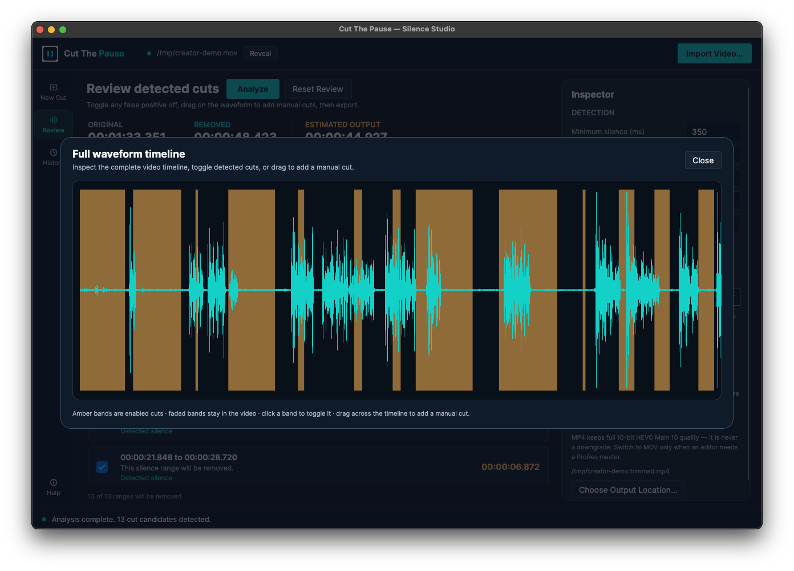
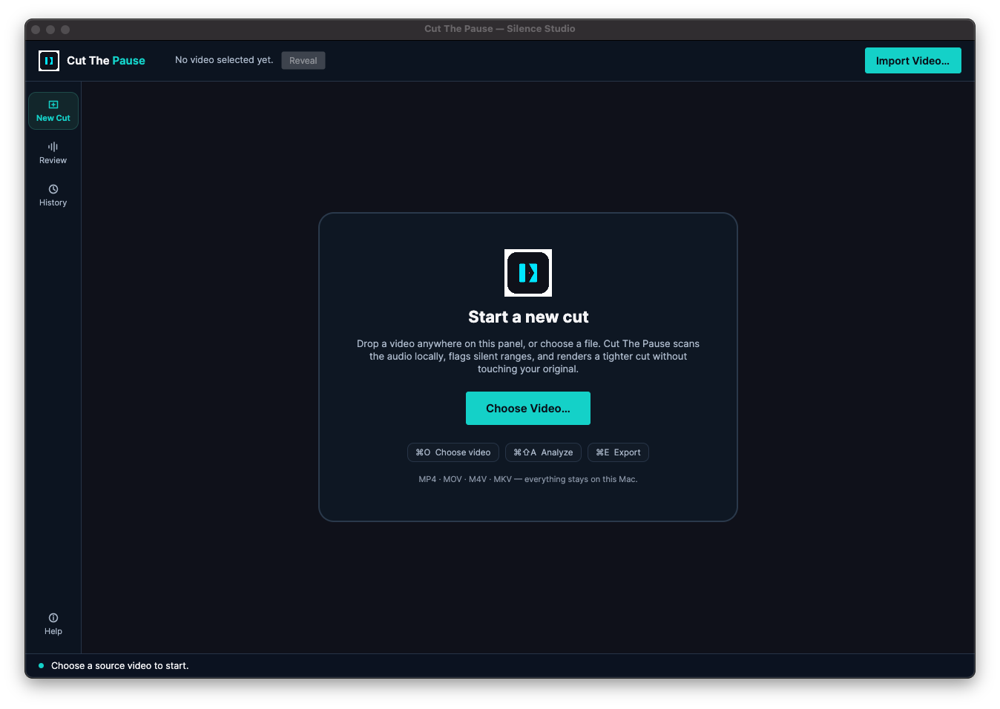
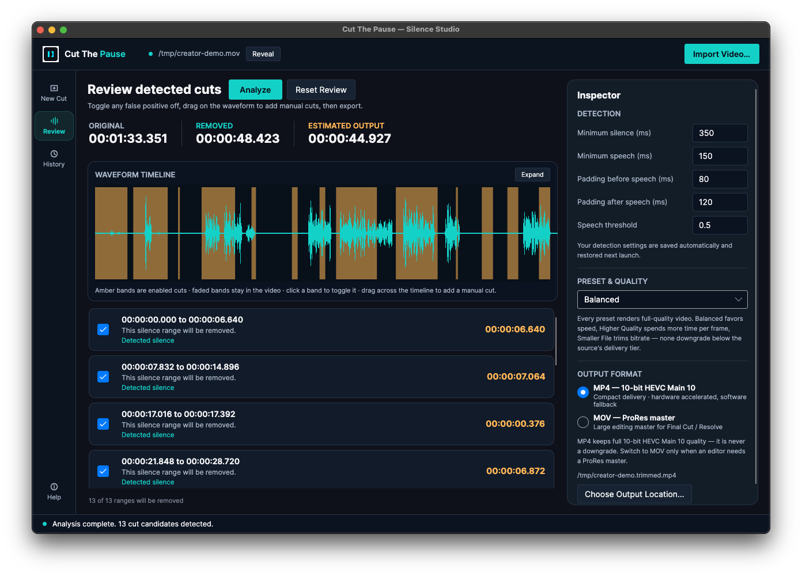
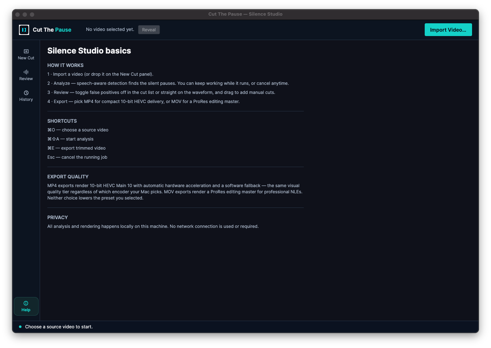

Waveform timeline and manual cut ranges
See the analyzed shape, then add or adjust manual cut ranges alongside detected silence.
Mac-first desktop beta · v0.1.0
Find quiet gaps, review every proposed cut, and export a cleaner video.

The quiet edit
One real sample clip. One clear review loop. The app proposes the gaps; you decide what survives.


Current desktop UI
The beta keeps the review loop focused while giving longer projects more control.
See the analyzed shape, then add or adjust manual cut ranges alongside detected silence.
Pause an export and resume from its saved checkpoint without restarting the job.
Return to prior analysis and export records from the desktop app.
Save detection and export settings under a name for repeatable work.
Current UI screens
Fresh captures of the current desktop flow.

Analyzed current UI
Review, inspect, and expand the full timeline.
A Silero VAD pipeline is used when the model is available, with an energy-based fallback when it is not.
Every proposed cut is visible and can be disabled before anything is exported.
Export a compact 10-bit HEVC MP4 or an explicitly selected ProRes-based MOV master.
Download the unsigned Apple Silicon build from GitHub, verify the checksum, and follow the install guide for the first launch.
Download the verified beta from GitHub.
Expected files: CutThePause-macos-arm64.zip and .sha256.
Compatibility and install
The current beta targets Apple Silicon Macs running macOS 13.0 or newer. Intel Macs are not a supported target for this package.
In Downloads, run shasum -a 256 -c CutThePause-macos-arm64.zip.sha256. The result must say OK.
Double-click the verified ZIP in Finder, then move Cut The Pause.app to ~/Applications or /Applications.
The beta is unsigned and not notarized. On first launch, Control-click the app in Finder, choose Open, then choose Open again.
The current desktop workflow is designed around local analysis and export on your Mac. The app has no account or cloud-processing flow in the current beta documentation.
This beta is unsigned and not notarized, so Gatekeeper warnings are expected. Verify the checksum first, then use Finder’s right-click → Open flow. Never disable Gatekeeper globally.
The app falls back to its built-in energy-based detector and shows a warning. The downloaded beta is intended to include the model in the app bundle.
Yes. The review list exposes each detected silence range so you can disable false positives before exporting.
No live checkout is connected to this preview. The project is open source and the current beta is supporter-funded; voluntary support is not a proprietary license or a required purchase.
Found an edge case? Open a GitHub issue with the exact input file, macOS version, and app status or warnings panel.
Include a reproducible step and the app status or warnings text with your report.
Privacy
The app workflow is built for local video analysis and export. Current documentation describes local settings, history, detection settings, custom presets, and export checkpoints under the macOS application-data folder. This static site has no analytics, trackers, account system, or upload form.
Changelog
Terms
The repository source is MIT-licensed. The software is provided “as is,” without warranty. FFmpeg, the Silero VAD model, and other runtime inputs have their own licenses and notices; review the bundled documentation before redistribution.
Refund policy
There is no live checkout or paid plan connected to this preview, so no refund promise is being presented. If a future support or hosted service introduces payment, it must publish separate terms before accepting it.
This block is intentionally non-functional. Configure a reviewed checkout URL only when the project has one; the static site does not collect payment details.